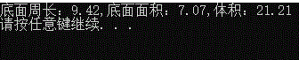
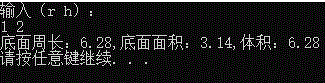

#include<stdio.h>
#include<stdlib.h>
int main()
{
const double PI = 3.1415926;
const double R = 1.5;
const int H = 3;
double c, s, v;
c = 2 * PI*R;
s = PI * R*R;
v = s * H;
printf("底面周长：%.2f,底面面积：%.2f,体积：%.2f\n",c,s,v);
system("pause");
return 0;
}
结果

#define _CRT_SECURE_NO_WARNINGS
#include<stdio.h>
#include<stdlib.h>
#define PI 3.1415926
int main()
{
double r, h;
double c, s, v;
printf("输入（r h）：\n");
scanf("%lf %lf", &r, &h);
c = 2 * PI*r;
s = c / 2 * r;
v = s * h; printf("底面周长：%.2f,底面面积：%.2f,体积：%.2f\n",c,s,v);
system("pause");
return 0;
}
结果
